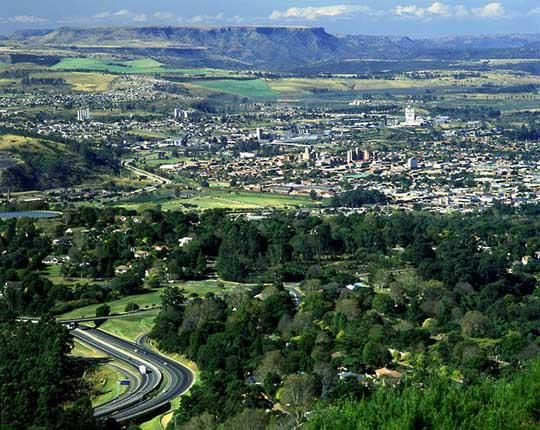
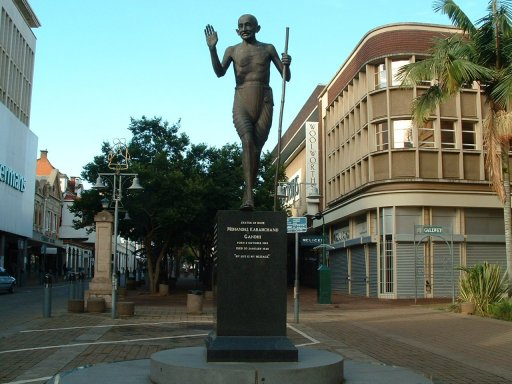
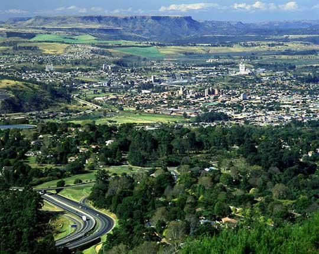
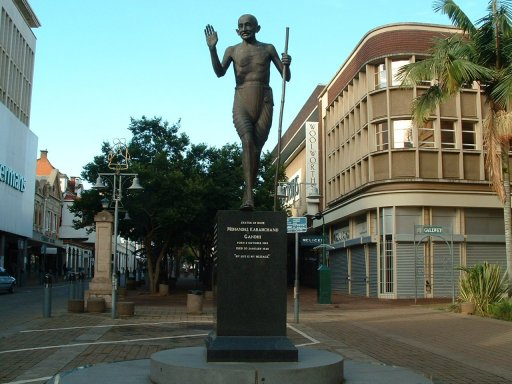

Pietermaritzburg is the capital and second-largest city in the province of KwaZulu-Natal, South Africa. It was founded in 1838 and is currently governed by the Msunduzi Local Municipality. Its Zulu name umGungundlovu is the name used for the district municipality.

 


